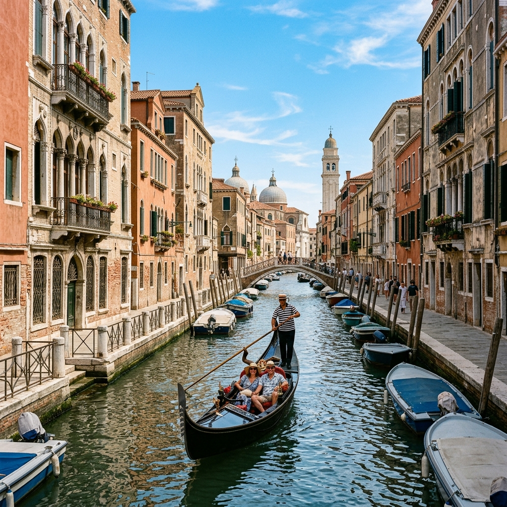

Италия
Оформление шенгенской визы в Италию — сейчас один из самых простых и лояльных способов получить европейскую визу. Процент одобрения очень высокий.
Запись на подачу ведётся на 1–2 месяца вперёд; срочные варианты на следующий день — по запросу.
Срок оформления с момента сдачи документов — от двух месяцев.
Подача возможна в Краснодаре, Ростове-на-Дону, Москве, Санкт-Петербурге и других городах. Есть вариант подачи без вашего присутствия.
Сейчас выдают однократные визы под даты поездки; консульство может добавить небольшой коридор к сроку визы.

8 500 ₽
Консультация и подготовка документов на одного человека. Скидки от двух человек.
Консульский и сервисный сборы оплачиваются отдельно — примерно 12 750 ₽ на человека.
Подача без присутствия — 25 500 ₽ на человека, все сборы включены. Возможность зависит от ранее сданной биометрии, паспорта и нотариальной доверенности; подробности — в списке документов.
Список документов и условия оформления
Италия. Оформить шенген с нами просто!
Оформление визы в Италию в Краснодаре и Сочи!
Стоимость консультации и подготовки документов – 8500 р./1 чел. (скидки от 2х чел.)
*Отдельно при подаче оплачиваются консульский сбор и сервисный сбор визового центра ~12750 руб. /1 чел
Подача личная в Краснодаре, Ростове-на-Дону, Москве, Н. Новгороде, Самаре, Екатеринбурге или Казани.
***Если Вы сдавали отпечатки пальцев на Шенгенскую визу последние 5 лет, не меняли загранпаспорт (если меняли, то написание фамилии и имени не изменилось) можем оформить визу без Вашего присутствия в визовом центре по нотариальной доверенности. Стоимость 25500 руб./1 чел. (все сборы включены)
***В случае , если в паспорте РФ постоянная прописка Москва или МО, Санкт-Петербург или Северо-западный регион — подробности подачи уточняйте по тел. +79628538393
Список основных документов для оформления визы в Италию:
1. Опросник на шенгенскую визу с нашего сайта, заполненный разборчиво на русском языке.
Скачать опросник на визу WordСкачать опросник на визу PDF
2.Заграничный паспорт, действительный не менее трех месяцев после срока окончания действия запрашиваемой визы, содержащий минимум две незаполненные страницы (разворот).
Аннулированные/ с истекшим сроком действия загранпаспорта.
При наличии двух действующих заграничных паспортов необходимо предоставить оба паспорта
3. Копия общегражданского паспорта: 1 страница+ страницы с прописками
4. Две цветные фотография 35х45 мм на белом фоне, не старше 6 месяцев, размер лица от макушки до подбородка 31-33 мм
5.Медицинская страховка путешественника на весь период предполагаемой поездки, действительная во всех странах Шенгена и покрывающая любые расходы, которые могут возникнуть в связи с возвращением на родину по медицинским показаниям, необходимостью оказания срочной медицинской помощи, срочного лечения в стационаре или смертью в период поездки. Минимальная страховая сумма — €30.000 (можно оформить у нас в офисе)
6.Подтверждение занятости:
-Для работающих по найму: справка с места работы ( должна быть распечатана на бланке компании и содержать следующую информацию: адрес и номера телефонов работодателя, позиция сотрудника в компании, месячный заработок, с какого времени сотрудник работает в компании, подтверждение предоставления отпуска или командировки). Нововведение: дополнительно к справке с работы предоставляется справка формы 2-НДФЛ за последние 6 месяцев или в свободной форме в справке с работы указывается зарплата за последние 6 месяцев (помесячно).
- Для индивидуальных предпринимателей и работающих у ИП — копии свидетельств ОГРН и ИНН, а так же копию свидетельства о внесении в ЕГРИП (Индивидуальные предприниматели, зарегистрированные в реестре Индивидуальных предпринимателей после 01.01.17г., предоставляют лист записи в ЕГРИП) или выписку из ЕГРИП.В случае, если работодателем является индивидуальный предприниматель, к справке с работы прикладывается ксерокопия свидетельства о внесении в ЕГРИП (сотрудники, работающие у Индивидуальных предпринимателей, зарегистрированных в реестре Индивидуальных предпринимателей после 01.01.17г., предоставляют лист записи в ЕГРИП) или выписку из ЕГРИП. Нововведение: дополнительно предоставляют к регистрационным документам подтверждение экономической деятельности (например, форма 2НДФЛ или 3НДФЛ) за последний отчетный период
- Самозанятые предоставляют справку из Налоговой службы о состоянии расчетов (доходах) по НПД за текущий/предыдущий год, справку о регистрации самозанятости.
- Пенсионеры предоставляют пенсионное удостоверение (оригинал + ксерокопия) или справку из Пенсионного Фонда о назначении пенсии (оригинал + ксерокопия) или свидетельство пенсионера (оригинал+копия).
-Безработные предоставляют документы, подтверждающие связь с Российской Федерацией (н-р, данные о семейном положении, свидетельство о государственной регистрации права и т.д.), а также копии страницы трудовой книжки, содержащей персональные данные, и страниц, сообщающих о роде деятельности в течение как минимум последних 3 лет (если применимо).
-Студенты предоставляют копию студенческого билета и справку с места учебы с печатью и подписью декана факультета. Для оформления пакета документов на получение визы справка действительна в течение месяца, начиная с даты подписания на дату подачи документов.
-Школьники предоставляют справку с места учебы. Для оформления пакета документов на получение визы справка действительна в течение месяца, начиная с даты подписания на дату подачи документов.
7. Сведения о трудовой деятельности, предоставляемые из Фонда пенсионного и социального страхования Российской Федерации за последние 10 лет. Документ должен быть сопровожден цифровой подписью (документ можно скачать на ГосУслугах)
8. Подтверждение достаточного количества денежных средств. Рекомендуемый остаток на счету от 450 тыс. руб. Счет может быть в любой валюте (в т.ч. рублевый). Справка должна отражать движение по счету за 3 месяца +остаток
Принимаются электронные выписки с QR кодом из банков «Тинькофф», «Альфа-Банк», «Сбербанк», «ВТБ», а также из банков, филиалов которых нет в России.
В качестве финансовой гарантии не подходят следующие документы: справка об обмене валюты, наличные деньги, а также электронные выписки, не заверенные печатью банка и подписью лица, оформившего документ.
- Спонсорство допускается ТОЛЬКО для несовершеннолетних детей родителями. Для подтверждения спонсорства необходимо предоставить:
1. финансовая гарантия родителя;
2. документы, подтверждающие родство (свидетельство о рождении ребёнка — оригинал+копия). При смене фамилии/ий также необходимо предоставить документы для подтверждения каждой смены фамилии/ий);
В случае спонсорства несовершеннолетних детей, выезжающих в сопровождении одного из родителей, спонсором может являться только родитель, сопровождающий ребенка в поездке. В случае спонсорства несовершеннолетних детей, выезжающих без сопровождения родителей, или в сопровождении обоих родителей — любой из родителей.
Финансовые гарантии могут быть предоставлены в рублях, долларах и фунтах стерлингов в соотношении к евро. В случае, если валюта в справке не является одной из вышеперечисленных, необходимо, чтобы банк отобразил курс конвертации валюты в справке в момент ее выдачи
Все предоставляемые справки должны быть не старше месяца на момент подачи документов!!!
9. Подтверждение о бронировании билета на самолет или, в случае поездки на поезде или автобусе, копию билета или подтверждения о бронировании билета на поезде или автобусе.
10. Для поездок на автомобиле: копия водительских прав и свидетельства о регистрации ТС, а также зеленая страховая карточка, действующая на весь период поездки
11. Для въезда детей нужно свидетельство о рождении, а также для детей путешествующих без сопровождения родителей ( или в сопровождении одного из родителей) требуется нотариально заверенное согласие на выезд от родителей( или от одного родителя) выданное не более одного года назад!!!+копии паспортов родителей(страница с личными данными и пропиской)и копия паспорта лица, на которого оформлено согласие. В согласии обязательно должна быть прописана фраза «…..в Италию и другие страны Шенгенского соглашения».
Дополнительные документы в зависимости от цели поездки:
Туризм:
- Подтверждение о бронировании гостиницы, содержащее следующую информацию: название, адрес и номер телефона гостиницы, а также имена и фамилии всех заявителей на латинице(как в загранпаспорте)
Частные визиты:
- Приглашение гражданина Италии или иностранного гражданина, легально проживающего на территории Италии,
- Копия паспорта (страница с личными данными и личной подписью) или копия действующего вида на жительство.
Обращаем Ваше внимание: приглашение должно быть установленного образца. Бланк приглашения мы можем отправить на вашу электронную почту. На каждого заявителя заполняется отдельный бланк.
В приглашении должны быть указаны сроки и адрес пребывания приглашенного на территории Италии, оно должно быть подписано приглашающим лицом. Второй лист приглашения заполняется полностью (в каждом пункте ставится соответствующая отметка)
Деловая поездка:
- Приглашение от итальянской фирмы, иностранного филиала итальянской фирмы, или итальянского филиала мультинациональной фирмы установленного образца (отсканированная копия, факс).
В приглашении обязательно указываются номер регистрации в Торговой Палате и следующие данные:
• ФИО всех приглашенных лиц, должность и место работы
• период запрашиваемой визы
• планируемая деятельность приглашенных в Италии (напр.: посещение фабрик, неоплачиваемые стажировки в фирмах, заказ материалов и т.п.) с указанием мест посещения
• учреждение или физическое лицо в Италии, которое берет на себя все расходы по проживанию приглашенного лица, его питанию и медицинскому страхованию.
Приглашение должно быть оформлено на фирменном бланке компании, заверено печатью и подписью ответственного лица итальянской организации с расшифровкой подписи. В приглашении должно быть указано: «Приглашающая фирма несет уголовную ответственность на весь срок пребывания иностранного гражданина, если он нарушит законодательство об эмиграции» (DL 286, DEL 25.7.1998, ART, 12).
Если заявителя сопровождают родственники, в приглашении указываются их личные данные и цель поездки «сопровождение».
- Копия паспорта представителя итальянской организации, подписавшего приглашение (страницы с личными данными и личной подписью)
- Справка из Торговой Палаты (visura camerale) приглашающей фирмы со сроком действия не больше 6-ти месяцев (копия).
- Документы, подтверждающие наличие места проживания:
- бронь отеля с указанием адреса и телефона гостиницы, срока пребывания, именем и фамилией каждого заявителя.
или
- наличие точного адреса проживания с номером телефона в приглашении от итальянской организации.
Для всех типов виз нужны фото и медицинская страховка.
Все это вы можете сделать у нас в офисе.
Обсудим вашу поездку?
Уточним состав услуги и порядок подачи, ответим на вопросы по документам.